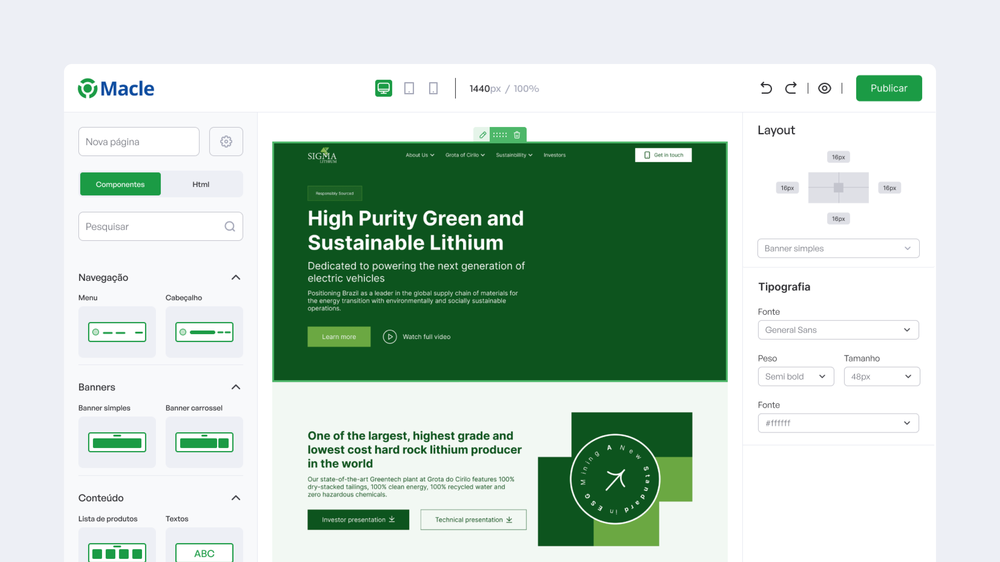
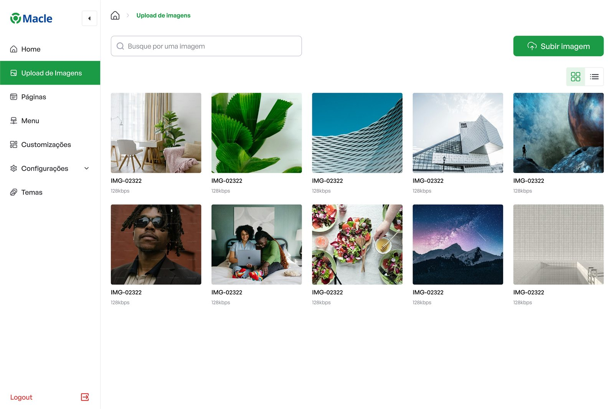
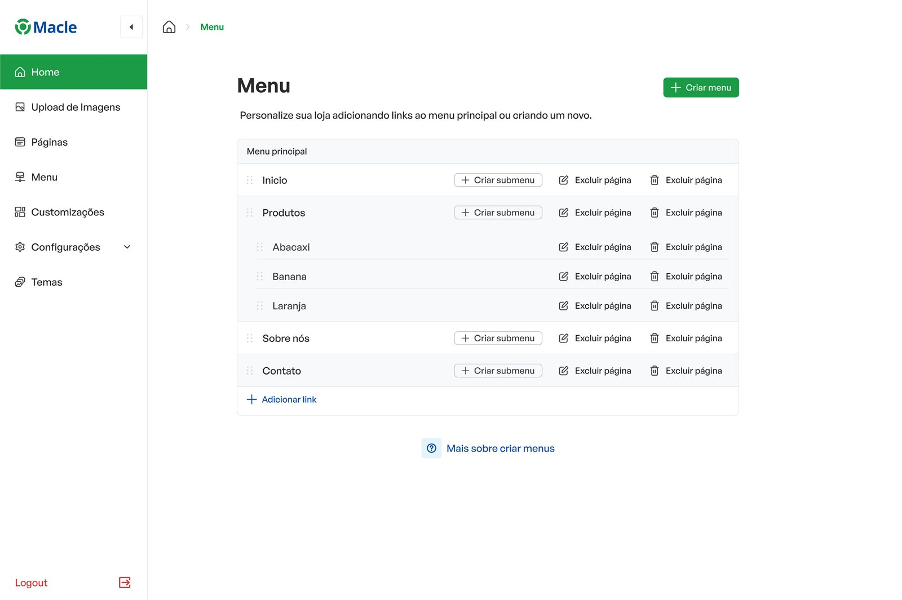
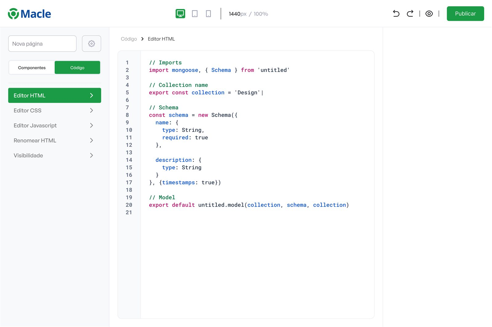

Website Builder Macle
Website Builder Macle é um case de construtor de sites pensado para montar páginas com rapidez, clareza visual e uma base modular pronta para escalar. A estrutura organiza o fluxo de criação para reduzir fricção entre configurar, editar e publicar.

Visão geral
A Macle é uma empresa de sistemas, seu maior produto é uma plataforma ERP que atende milhares de clientes com foco no sul do país. Um de seus produtos era um simplório porém funcional criador de sites, mas com o passar de vários anos a empresa entendeu a necessidade de melhorar esse produto, torna-lo moderno e atual afinal é um produto oferecido aos seus clientes.

Problema e oportunidade
Usar o criador antigo era difícil; encontrar os blocos dependia de muitos cliques, o que deixava o fluxo massante.
Dores comuns do usuário (exemplos):
- Não sei por onde começar um site.
- Não quero mexer com código.
- Preciso do suporte.
Hipótese:
Se o produto transformar “montar site” em um fluxo guiado + blocos prontos, os usuários ganham autonomia e criam sites mais rápido e sem dificuldade.

Solução
A solução foi desenhar uma experiência que simplifica a criação de websites por meio de uma interface modular, intuitiva e orientada à experimentação. O projeto foi estruturado para tornar o processo de construção mais fluido, reduzindo complexidade e destacando flexibilidade, personalização e controle visual. A interface combina clareza funcional com uma abordagem contemporânea, transformando o builder em uma ferramenta acessível sem perder sofisticação. A lógica modular e a experiência responsiva reforçam escalabilidade e facilidade de uso.

Resultados
Como resultado, o projeto materializa uma experiência de produto mais madura e consistente, capaz de comunicar potência e simplicidade ao mesmo tempo. A solução fortalece a percepção do builder como ferramenta flexível para criação digital, melhora a compreensão dos fluxos de uso e traduz funcionalidades complexas em uma experiência visualmente clara, moderna e confiável.